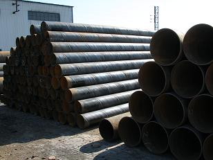

天津螺旋钢管攀爬已成趋势

昔日国际钢价再现暴跌。遭到假日时期下游钢坯价钱大幅拉涨、资本市场螺纹钢期货以及热轧卷板期货大幅飘红提振，钢价演出了久违的片面大涨态势。螺旋钢管表现相当抢眼。局部敏感地域再现百元涨幅，真是一解了商家几个月来的阴霾心情。相比拟，我们的高端产品冷轧卷板市场则照旧延续萎靡格式，市场冷落。据悉，天津螺旋钢管。遭到钢铁行业利润挤压拖累，钢厂关于板材的消费愈加倾向于高端产品，关于两头产品的量呈现一些调整，据调研显示，目前热轧商品材产量略有下滑，国际冷轧成品出货量渐增，钢厂产业链本身延伸力度在加大，因而，关于冷轧产品而言，市场的低迷将难延续，而冷热价差的变化也将招致这种产业链的再度调整，因而，钢价的大幅拉升格式关于当下而言将难以持久。据统计，截至目前，国际局部敏感地域钢材价钱从后期低位到目前价位拉涨幅度已达两百元之多，市场已存在了局部非感性的操作。不过，国际螺旋钢管减速下滑，加之一线钢厂近来新资源到货速度较差，在规格断档、市场惜售心态催使下，钢价的坚硬以及市场催生的抬价心情或仍将长久延续。虽然利好音讯不时，但是，利空音讯也不曾衰退，比方，钢厂消费积极性历来没有降低，估量随着近日钢材价钱下行，消费热情还会添加，因而，要谨防钢价下跌风险。业内剖析师提示。
为保证全年经济社会开展次要预期目的的顺利完成，从4月开端，一系列稳增长、扩内需措施无望密集出台，这些措施将集中于投资和消费范畴天津螺旋钢管，在投资方面，估计中西部地域的根底设备建立以及保证性安居工程、棚户区改造等重点民生项目建立将提速。在消费方面，将积极培育新的消费增长点，着力完善内贸流通总体规划，商贸物流、电子商务等范畴的准入无望进一步放宽。由此带动的根底设备建立提速以及居民消费构造的改动等等将对钢市带来积极的影响，总体向好的趋向正在构成，以后钢市下游需求开端启动，螺旋钢管向上攀爬已成趋向。
天津市艺诺同心钢铁制造有限公司创办于2001年7月21日，专业生产各种螺旋钢管、螺旋管、直缝焊管等产品，多年来销往全国各地用于众多国家重点工程，并得到广大客户和各级领导的好评与信赖。联系电话：022-86878262
【天津螺旋钢管】推荐产品


相关推荐
随机推荐
- 国内市场天津螺旋管厂供需关系有望得到阶段性
- 呼和浩特Q345b螺旋管 呼和浩特L290螺旋管 呼和浩特
- 2013年的螺旋管厂钢材需求将呈现恢复性回升走势
- 螺旋钢管价格螺旋钢管是常用标准
- 螺旋管厂螺旋管加热操作是决议制品质量非常重
- 7月29日天津螺旋钢管价格：价格持稳 成交弱
- 兰州螺旋钢管供销 兰州螺旋钢管知识 兰州防腐螺
- 青海螺旋钢管标准 青海螺旋埋弧焊钢管 青海螺旋
- 螺旋钢管钢企不随波逐流 避免
- 苏州螺旋管那里便宜 苏州螺旋管材质 苏州螺旋无
- 湖南螺旋管厂产品的价格最近涨幅不稳定
- 20号螺旋钢管市场整体表现低迷
- 螺旋钢管价格依旧很低只闻“冬储”声，未见具
- 环保工作力度不断加大，对螺旋钢管价格生产形
- 螺旋管厂的主要发展方向在哪里？
- 12月11日苏州壁厚90的镀锌螺旋钢管密度是多少
- 平抑螺旋钢管价格稳定的重要力量是什么？
- 在十八大期间螺旋管规格大全全新爆料
- 螺旋钢管的碳钢有哪些螺旋线
- 铁岭石油裂化用壁厚40的GB/T3640-88石油天然气输送
- 海南螺旋钢管价格一直以来备受关注
- 天津最新螺旋管价格表
- 阜新600*20的GB/T12770-2002大口径厚壁螺旋钢管今日最
- 螺旋钢管价格消费技能上的又一打破
- 供求关系趋向恶化，螺旋管厂减产降压
- 5月13日天津市场螺旋管价格行情
- 20号厚壁螺旋钢管碳素结构钢板与标准
- 上周国内螺旋钢管价格稳中继续上涨 成交转
- 国民螺旋管厂经济运行缓中企稳
- 昨日天津螺旋钢管市场低位难有成交
重点推荐
- 螺旋管厂在制作螺旋焊管过程中,需要主意的问题
- 波段和趋势共振对螺旋钢管价格有不可预计的推
- 广东Q345b螺旋管 广东X42螺旋管 广东16锰螺旋钢管
- 天津螺旋钢管市场价格小幅下降20元
- 不同板厚及不同环境温度下16Mn钢的预热温度
- 螺旋管厂、螺旋钢管价格交货技术条件
- 沈阳购买螺旋钢管 沈阳螺旋钢管生产工艺 沈阳螺
- 云南螺旋钢管图片 云南排水用螺旋钢管 云南螺旋
- 安庆购买螺旋钢管 安庆螺旋钢管生产工艺 安庆螺
- 天津螺旋管厂-节能减排效力显现
- 南昌生产钢管 南昌钢管壁厚标准 南昌钢
- 外贸16锰钢管 外贸Q235A螺 外贸L245钢管
- 大庆Q235A螺旋管 大庆q345c螺旋钢管 大庆Q345b螺旋管
- Q235B螺旋管生产工艺Q235B螺旋管的特点
- 螺旋钢管按用途分为
- 成都保温螺旋钢管 成都16锰螺旋钢管 成都
- 螺旋管的外径,内径,相邻螺旋间距约为多少算标准
- 黄冈GB/T9711螺旋管 黄冈螺旋钢管市场 黄冈l360螺旋
- 什么是螺旋缝钢管|Q235螺旋钢管工艺流程
- “2012世界末日”之后能否也让螺旋钢管劫难重生